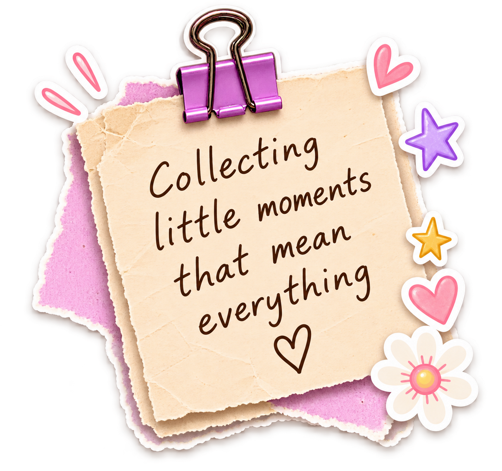
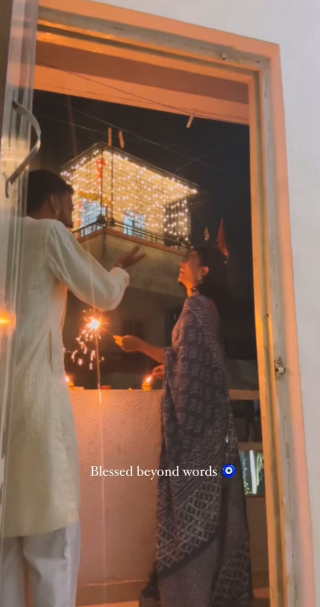

tap to open ✨

Some moments don't need a filter — they just need to be lived,
felt, and quietly tucked away somewhere safe.
I keep thinking about how naturally we stumbled into each
other's lives. No grand entrance, just two people finding
their way to the same page, at exactly the right time.
Every inside joke nobody else would understand,
every comfortable silence that never felt awkward,
every unplanned detour that somehow became a favourite
memory — I've collected them all here, in this little diary.
You make ordinary days feel like something worth
remembering. And on your birthday, I want you to know:
I'm grateful every single day that our stories overlap
the way they do.
Here's to every page still left to write together. 🌸
— always yours ♡
tap to close ✦
the end,
for now
♡